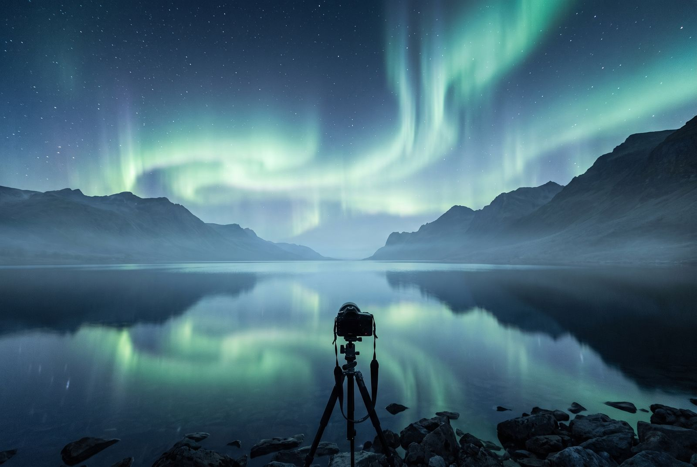
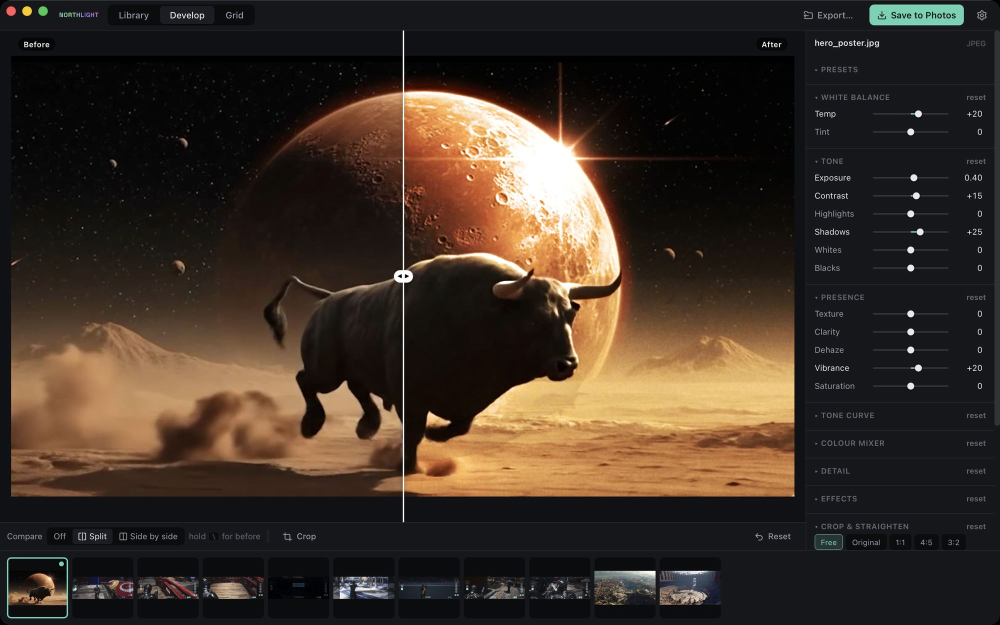
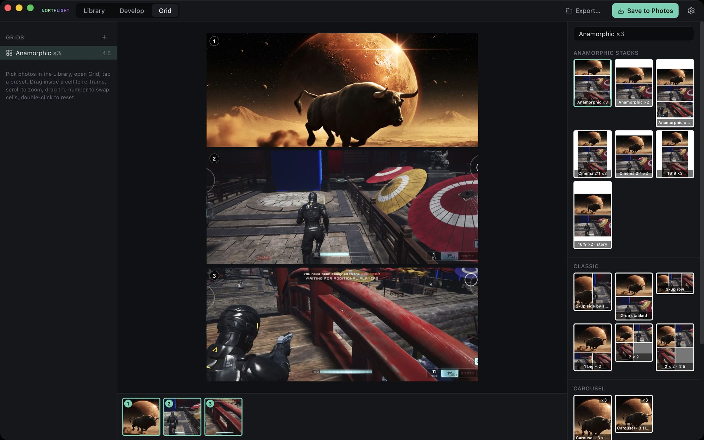
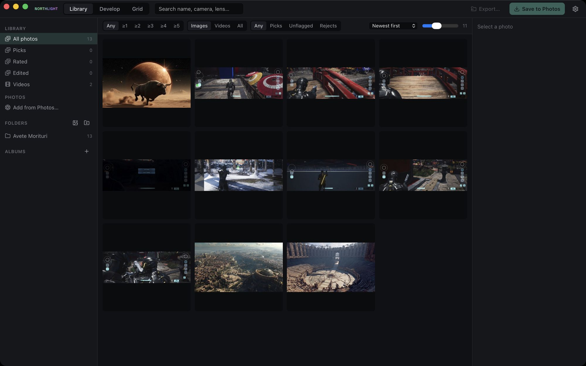

A photo editor for everyone.
The library and develop view you know, the useful parts of Photoshop, and AI where it saves time.
In action
Real screens from the app as it is today.



What it does
Non-destructive: exposure, white balance, curves, colour mixer, clarity, texture, dehaze, grain.
Brush, gradients, colour and luminance ranges, and AI masks for subject, sky, background and people.
Paint over an area, say what it should become, and only that area is repainted.
Anamorphic frames stacked into one portrait post, classic splits and carousels, in a few taps.
A finished JPEG straight into Photos on Mac and iPhone, with one tap or always.
Before and after, side by side or split, wherever something changes your picture.
One library, on your own drive
Northlight, Iceberg and Borealis share one library in your own Google Drive. Previews stream to every device, originals stay backed up, edits travel as small files. A rating you give in one app is there in the others.
Free, or Pro
Local never costs. Cloud AI runs on your own key, or on Pro.
Free
- Everything that runs on your device, for good.
- Every AI feature with your own key, at your provider's price.
- The library and sync through your own cloud drive.
Pro
- The same AI features with no keys to set up.
- Paid with credits; the cost shows before anything runs.
- Nothing is ever billed by surprise.
Where it stands
A first working version on the Mac.
Android later. Open source later.